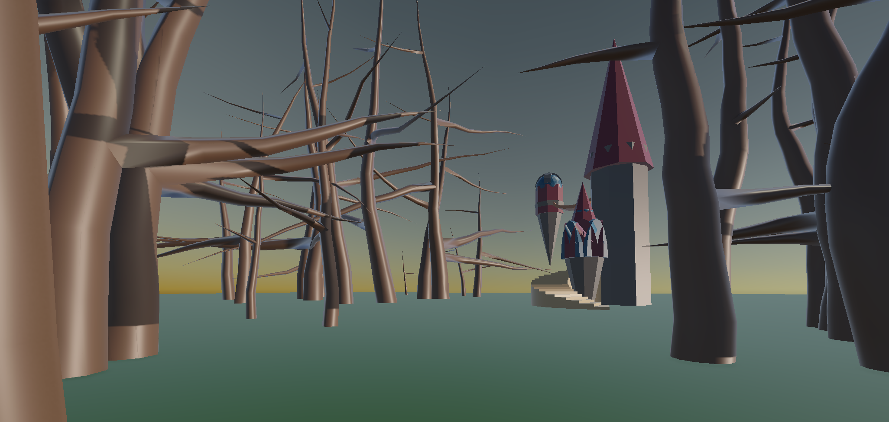
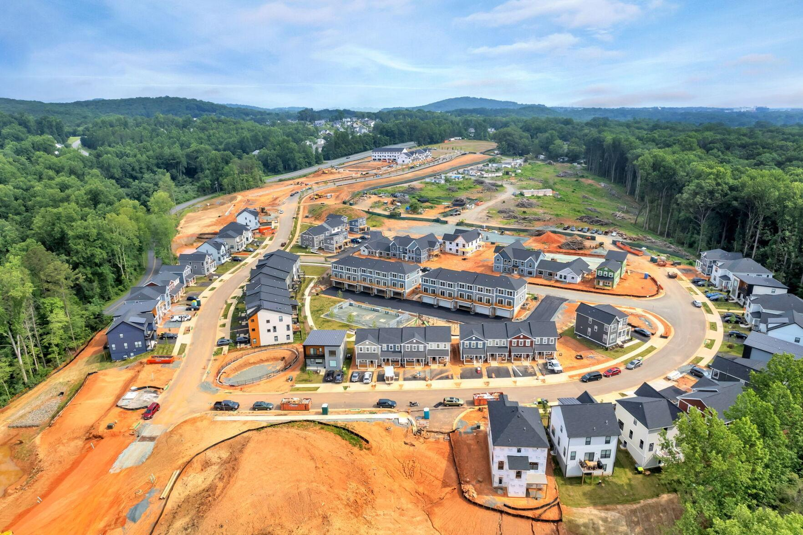

Notes
placeholder
Interactive XR Documentaries
Computer Science & English
Created by Renee Bunn
This website was created during the Fall 2026 semester at JMU for CS 480: XR
Documentaries taught by
Computer Science
professor Dr. Isaac Wang
and English professor Dr. Dennis Lo. This website acts as a "digital archive" of my work completed
in CS 480.
This course asks the question of "what if extended reality (XR) weren't just
for
games and virtual tourism, but a tool a community
could use to tell its own story?".
During this semester, we built immersive, interactive documentation for the
Meta Quest using Unity game engine.
Alongside writing and media students from ENG 421 and residents of Charlottesville's
Southwood community (through Habitat for Humanity of
Greater Charlottesville), we worked toward our goal to create an XR documentary that turned these neighborhoods
and their stories into
interactive archives.
Over the course of the semester we learned to capture the real world in 3D, build and deploy
interactive scenes to the Quest, design comfortable and
learnable spatial interactions, anchor content to physical places, and ship a stable application
that anyone can pick up and use.
placeholder
placeholder

placeholder
placeholder

placeholder
placeholder

placeholder
placeholder